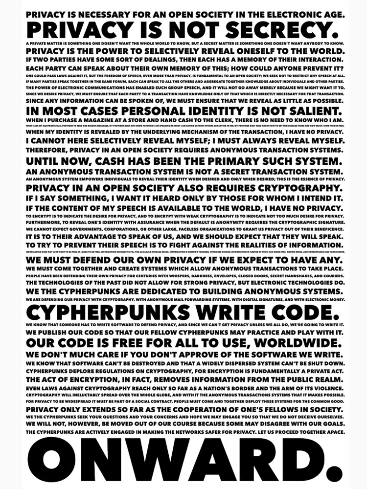

K2 - Learning Friday
Blockchain "Building Blocks"
29 marzo 2019

AMA
https://t.me/k2lf_blockchain
Blockchain

Cos'è una blockchain?
Struttura dati condivisa e immutabile
definita come un registro digitale le cui voci sono raggruppate in "pagine"
(dette blocchi), concatenate in ordine cronologico,
e la cui integrità è garantita dall'uso di primitive crittografiche

Bitcoin
31 Ottobre 2008


Cypherpunk
Una storia ...
Il baratto
Ti do' una cosa mia in cambio di un'altra di cui ho bisogno
Requisiti
Problemi
La puffo-moneta
La puffo-nota
Il puffo-registro (ledger)
| 1. | 1/1/2019 | Puffo A deposita 1000 PM |
| 2. | 2/1/2019 | Puffo B deposita 500 PM |
| 3. | 4/1/2019 | Puffo A preleva 500 PM |
| 4. | 4/1/2019 | Puffo B trasferice 400 PM a Puffo A |
| 5. | 5/1/2019 | Puffo C deposita 2500 PM |
| 6. | 5/1/2019 | Puffo C trasferisce 150 PM a Puffo B |
| 7. | ... | ... |
Un ledger centralizzato
- Prestazioni
- Sicurezza
- Singolo point-of-failure
Un ledger decentralizzato
Un ledger distribuito
Crittografia asimmetrica
Firma digitale
Funzioni hash
↓ H(x)
d438229c7d975cc8253ad7b92e86016a
eba49d4feb25cd252794d65ef770d98b
Proprietà hash crittografico
Indirizzi Bitcoin e firma delle transazioni
Generazione di un indirizzo Bitcoin


Creazione di una transazione
Propagazione di una transazione
Un ulteriore problema
Il problema dei generali bizantini
Practical Byzantine Fault Tolerance
Chi partecipa al consenso?
Sybil attack
Proof-of-work
sostituire una barriera formale alla partecipazione con una barriera economica
HashCash
HashCash
Come funziona HashCash?
Proof-of-Work in Bitcoin

Block Header
Merkle Tree

Merkel Tree
Merkel Merkle Tree
UTXO

Mining
Il primo miner che trova la soluzione al problema distribuisce il blocco agli altri nodi
Gli altri nodi verificano la validità del blocco
Se il blocco è valido viene aggiunto alla blockchain
Gestione dei conflitti
Sicurezza della blockchain
Modificare anche una singola transazione del n-ultimo blocco richiede
il ricalcolo della PoW di tutti gli ultimi n blocchi
... mentre nel frattempo i nodi onesti continuano a minare
nuovi blocchi sulla blockchain non manomessa
... a meno che l'attaccante non dispone di una potenza di
calcolo > 50% della potenza totale
Incentivi alla PoW
Maggiore è la potenza di calcolo totale per il mining, maggiore è la sicurezza della rete
Il block reward
Calcolo del block reward
Prossimo halving
Commissioni di transazione
$$\sum_i input_i \geq \sum_j output_j$$
Se la somma degli output è inferiore alla somma degli input,
la parte residua è da considerarsi come commissione (fee) per il miner
Mempool
Come calcolare la commissione ottimale?
Si misura in Satoshi/byte è dipende da quanto è "affollato" il mempool
1 Satoshi = 10-8BTC
Una catena collegata di blocchi
Il Genesis Block
Mining hardware
0.1-50 MH/s - 10 kWatt/GH/s
1-1000 MH/s - 200 Watt/GH/s
0.1-50 TH/s - 0.05 Watt/GH/s

Aggiustamento della difficoltà
La corsa all'Hash/sec

Altcoin
Altri meccanismi di consenso
Fork
Fork della chain
Soft fork
Hard fork
Esempi di coin split
→
Analisi delle blockchain
Per approfondire

Grazie!
https://t.me/k2lf_blockchain
@fadjano
https://www.criptobolla.it